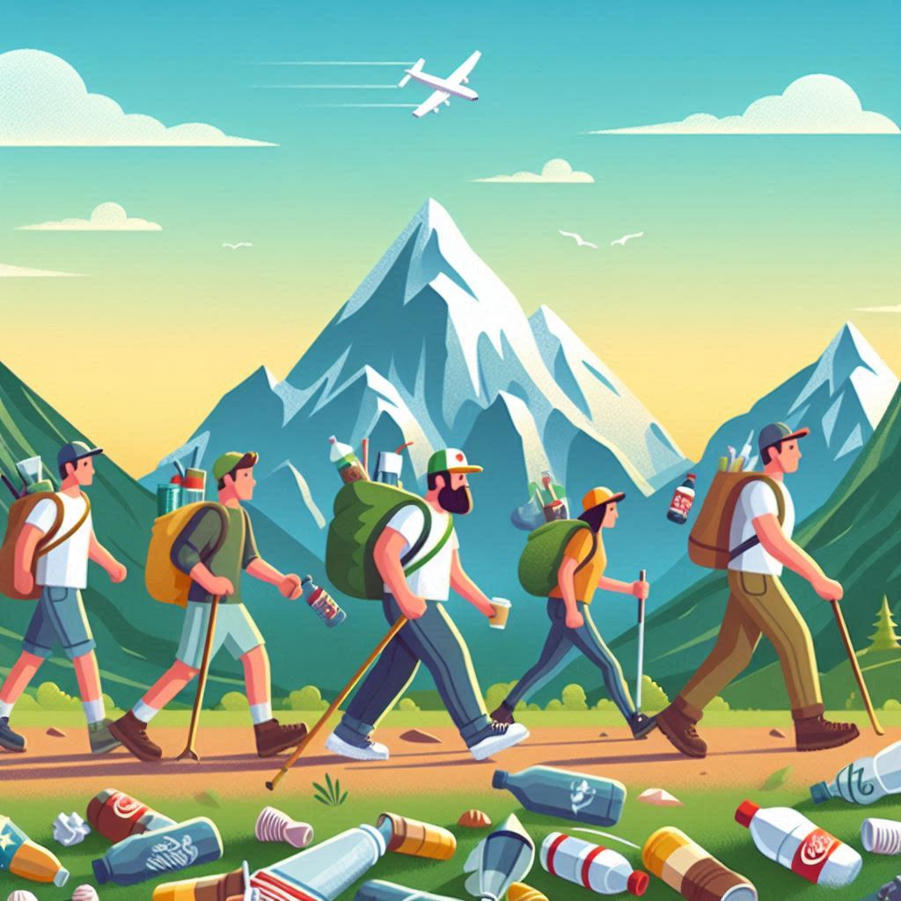

Getting to the start
How you get to the event matters! Our travel has the greatest impact on the environment. Over 90% of an event’s carbon footprint comes from a runner’s travel. Please consider an alternative lower impact form of transport to turn up to The Blorenge fell race.

Active travel
Come on your own steam, use your time to get a warm up and transport yourself without additional carbon emissions.
Facilities
- Bike rack for safe storage
- Safe space to leave bag
- Additional beer for active travelers
Public transport
Train
Abergavenny train station is a 35 minute walk or 20 minute jog from the start. Abergavenny runs trains to and from:
- Cardiff - 50 minutes
- Newport - 25 minutes
- Bristol - 1 hour 5 minutes
- Cwmbran - 15 minutes
- Pontypool - 10 minutes
- Hereford - 23 minutes
- Severn tunnel - 45 minutes
- Swansea - 2 hours
For up-to-date train schedules and to book your tickets, visit Trainline. It offers a comprehensive overview of train times and ticket options.
Bus
There are buses available to both Llanfoist and Abergaveny. Travel in style and get a jog in before the race.
- X25 - Cardiff to Abergavenny via Merthyr
- 3 - Brynmawr to Llanfoist
- X43 Brecon to Abergavenny
- Monmouth to Abergavenny
- Pontypool to Abergavenny
Car
There is limited parking available. Please please consider car sharing to not only reduce your carbon emissions but also ensure we have enough parking available for those who need it.

Bring full kit
Worried about not being able to run because you are not sure what kit you need. Well here is a list of what this event constitutes as “full kit”. And I’d recommend bringing the lot just encase the weather takes a turn for the worse.
- Water proof coat - taped seams
- Water proof trousers - taped seams
- Extra layer - fleece, long sleeve
- Warm hat - wool beanie
- Gloves
- Water
- Food - energy bar, gel, sandwich
- Map - OS leisure map advised
- Compass
- Whistle
Electronics
You are allowed to run with a GPS watch and a phone. But, if you use any form of navigational assitance from these devices you must inform the race organiser to be counted as a Non-competitive runner.
Kit swap
Looking to declutter your running gear collection or find some new-to-you items for your next run? Our Kit Swap is the perfect solution! Here's what you need to know:
🔄 Purpose: Our Kit Swap promotes sustainability within our running community by encouraging the reuse and recycling of gently used gear. It's a chance for us to share resources, support each other, and reduce our environmental impact together.
🛍️ How It Works: Bring your unwanted or lightly used running gear to the race. You can browse through the items available and take what you need, or contribute your own gear to the swap.
👟 Items Accepted: We accept a wide range of running-related gear, including shoes, clothing, hydration vests, hats, gloves, and more.
🌟 Benefits: By participating in the Kit Swap, you'll declutter your gear collection, find new items for your runs, and connect with fellow runners in our community. Plus, you'll be helping to reduce waste and support sustainability efforts.
📜 Guidelines: Please follow our guidelines for the Kit Swap to ensure its success. Items should be clean and in good condition.
🌈 Post-Event: Any remaining items from the Kit Swap will be donated to charity or organizations that support runners in need. You're also welcome to take back any items you contributed but did not exchange.
Walking course recce and litter pick
On Thursday, 21st November at 12:00pm, we’ll be holding a route recce and litter pick in preparation for the upcoming fell race. We’ll walk the 5.7km route to familiarise ourselves with it and ensure everything is in good condition. During the walk, we’ll also be collecting any litter we find to help keep our trails clean and enjoyable for all. Your involvement will not only help us prepare the route but also contribute to preserving our beautiful landscape. We look forward to seeing you there!
